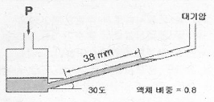
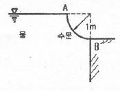
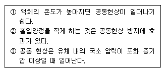
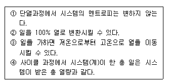

소방설비기사(기계분야) (2013-06-02 기출문제)
1과목: 소방원론
1. 위험물안전관리법령상 위험물의 적재시 혼재기준에서 다음 중 혼재가 가능한 위험물로 짝지어진 것은? (단, 각 위험물은 지정수량의 10배로 가정한다.)
- 질산칼륨과 가솔린
- 과산화수소와 황린
- 철분과 유기과산화물
- 등유와 과염소산
(정답률: 65%)

2. 다음 위험물 중 물과 접촉시 위험성이 가장 높은 것은?
- NaClO3
- P
- TNT
- Na2O2
(정답률: 52%)
3. Twin agent system으로 분말소화약제와 병용하여 소화효과를 증진 시킬 수 있는 소화약제로 다음 중 가장 적합한 것은?
- 수성막포
- 이산화탄소
- 단백포
- 합성계면활성제포
(정답률: 66%)
4. 다음 물질 중 공기 중에서의 연소범위가 가장 넓은 것은?
- 부탄
- 프로판
- 메탄
- 수소
(정답률: 74%)
5. 다음 중 제1류 위험물로 그 성질이 산화성고체인 것은?
- 황린
- 아염소산염류
- 금속분류
- 유황
(정답률: 77%)
6. 화재에 관한 설명으로 옳은 것은?
- PVC 저장창고에서 발생한 화재는 D급화재이다.
- PVC 저장창고에서 발생한 화재는 B급화재이다.
- 연소의 색상과 온도와의 관계를 고려할 때 일반적으로 암적색보다는 휘적색의 온도가 높다.
- 연소의 색상과 온도와의 관계를 고려할 때 일반적으로 휘백색보다는 휘적색의 온도가 높다.
(정답률: 72%)
7. Halon 1301 의 화학기호로 옳은 것은?
- CBrF3
- CClBr
- CF2ClBr
- C2Br2F4
(정답률: 81%)
8. 물체의 표면온도가 250℃ 에서 650℃ 로 상승하면 열복사량은 약 몇 배 정도 상승하는가?
- 2.5
- 5.7
- 7.5
- 9.7
(정답률: 73%)
9. 물질의 연소시 산소 공급원이 될 수 없는 것은?
- 탄화칼슘
- 과산화나트륨
- 질산나트륨
- 압축공기
(정답률: 60%)
10. LNG 와 LPG 에 대한 설명으로 틀린 것은?
- LNG는 증기비중은 1보다 크기 때문에 유출되면 바닥에 가라앉는다.
- LNG의 주성분은 메탄이고, LPG의 주성분은 프로판이다.
- LPG는 원래 냄새가 없으나 누설시 쉽게 알 수 있도록 부취제를 넣는다.
- LNG는 Liquefied Natural Gas 의 약자이다.
(정답률: 74%)
11. 담홍색으로 착색된 분말소화약제의 주성분은?
- 황상알루미늄
- 탄산수소나트륨
- 제1인산암모늄
- 과산화나트륨
(정답률: 79%)
12. 건물의 주요구조부에 해당되지 않는 것은?
- 바닥
- 천장
- 기둥
- 주계단
(정답률: 74%)
13. 다음 중 인화성 액체의 발화원으로 가장 거리가 먼 것은?
- 전기불꽃
- 냉매
- 마찰스파크
- 화염
(정답률: 77%)
14. 방화구조에 대한 기준으로 틀린 것은?
- 철망모르타르로서 그 바름두께가 2cm 이상인 것
- 석고판 위에 시멘트모르타르를 바른 것으로서 그 두께의 합계가 2.5cm 이상인 것
- 시멘트모르타르 위에 타일을 붙인 것으로서 그 두께의 합계가 2cm 이상인 것
- 심벽에 흙으로 맞벽치기 한 것
(정답률: 65%)
15. 열경화성 플라스틱에 해당하는 것은?
- 폴리에틸렌
- 염화비닐수지
- 페놀수지
- 폴리스티렌
(정답률: 64%)
16. 발화온도 500℃에 대한 설명으로 다음 중 가장 옳은 것은?
- 500℃로 가열하면 산소 공급없이 인화한다.
- 500℃로 가열하면 공기 중에서 스스로 타기 시작한다.
- 500℃로 가열하여도 점화원이 없으면 타지 않는다.
- 500℃로 가열하면 마찰열에 의하여 연소한다.
(정답률: 71%)
17. 다음 중 프래시 오버(flash over)를 가장 옳게 설명한 것은?
- 도시가스의 폭발적 연소를 말한다.
- 휘발유 등 가연성 액체가 넓게 흘러서 발화한 상태를 말한다.
- 옥내화재가 서서히 진행하여 열 및 가연성 기체가 축적되었다가 일시에 연소하여 화염이 크게 발생하는 상태를 말한다.
- 화재층의 불이 상부층으로 올라가는 현상을 말한다.
(정답률: 82%)
18. 1기압, 100℃ 에서의 물 1g 의 기화잠열은 약 몇 cal인가?
- 425
- 539
- 647
- 734
(정답률: 80%)
19. 화재발생시 주수소화를 할 수 없는 물질은?
- 부틸리듐
- 질산에틸
- 니트로셀룰로오스
- 적린
(정답률: 55%)
20. 이산화탄소의 물성으로 옳은 것은?
- 임계온도 : 31.35℃, 증기비중 : 0.529
- 임계온도 : 31.35℃, 증기비중 : 1.529
- 임계온도 : 0.35℃, 증기비중 : 1.529
- 임계온도 : 0.35℃, 증기비중 : 0.529
(정답률: 73%)
2과목: 소방유체역학
21. 경사마노미터의 눈금이 38mm일 때 압력 P를 계기압력으로 표시하면?

- 15.2 Pa
- 149 Pa
- 186 Pa
- 298 Pa
(정답률: 48%)
22. 진공압력이 40mmHg일 경우 절대압력은 약 몇 kPa 인가? (단, 대기압은 101.3kPa 이고 수은의 비중은 13.6 이다.)
- 53
- 96
- 106
- 196
(정답률: 63%)
23. 다음 관 유동에 대한 일반적인 설명 중 올바른 것은?
- 관의 마찰손실은 유속의 제곱에 반비례한다.
- 관의 부차적 손실은 주로 관벽과의 마찰에 의해 발생한다.
- 돌연확대관의 손실수두는 속도수두에 비례한다.
- 부차적 손실수두는 압력의 제곱에 비례한다
(정답률: 51%)
24. 어떤 펌프의 회전수와 유량이 각각 10%와 20% 늘어났을 때 원래 펌프와 기하학적으로 상사한 펌프가 되려면 지름은 얼마나 늘어나야 하는가?
- 1.5%
- 2.9%
- 5.0%
- 7.1%
(정답률: 45%)
25. 직경이 150mm인 배관을 통해 8m/s의 속도로 흐르는 물의 유량은 약 몇 m3/min인가?
- 0.14
- 8.48
- 33.9
- 42.4
(정답률: 58%)
26. 천이구역에서의 관마찰계수 f는?
- 언제나 레이놀즈수만의 함수가 된다.
- 상대조도와 오일러수의 함수가 된다.
- 마하수와 코우시수의 함수가 된다.
- 레이놀즈수와 상대조도의 함수가 된다.
(정답률: 73%)
27. 아래 그림과 같은 폭이 3m인 곡면의 수문 AB가 받는 수평분력은 약 몇 N 인가?

- 7350
- 14700
- 23079
- 29400
(정답률: 60%)
28. 점성계수가 0.9 poise 이고 밀도가 950kg/m3인 유체의 동점성 계수는 몇 stokes인가?
- 9.47 ×10-2
- 9.47 ×10-4
- 9.47 ×10-1
- 9.47 ×10-3
(정답률: 43%)
29. 물통에서 유출하는 물의 속도를 v라 하고, 동압을 P라 하면 v와 P의 관계는?
- v2 ∝ P
- v ∝ P2
- v ∝ 1/P
- v ∝ 1/P2
(정답률: 54%)
30. 피스톤-실린더로 구성된 용기 안에 온도 638.5 K, 압력 1372 kPa 상태의 공기(이상 기체)가 들어 있다. 정적 과정으로 이 시스템을 가열하여 최종온도가 1200 K가 되었다. 공기의 최종 압력은 약 몇 kPa 인가?
- 730
- 1372
- 1730
- 2579
(정답률: 55%)
31. 출구 단면적이 0.02m2인 수평 노즐을 통하여 물이 수평방향으로 8m/s의 속도로 노즐 출구에 놓여있는 수직평판에 분사될 때 평판에 작용하는 힘은 몇 N인가?
- 80
- 1280
- 2560
- 12544
(정답률: 53%)
32. 다음은 펌프에서의 공동현상(cavitation)에 대한 일반적인 설명이다. 항목 중에서 올바르게 설명한 것을 모두 고른 것은?

- ①
- ①, ②
- ②, ③
- ①, ②, ③
(정답률: 48%)
33. 물체의 표면 온도가 100℃에서 400℃로 상승하였을 때 물체 표면에서 방출하는 복사에너지는 약 몇 배가 되겠는가? (단, 물체의 방사율은 일정하다고 가정한다.)
- 2
- 4
- 10.6
- 256
(정답률: 66%)
34. 배연설비의 배관을 흐르는 공기의 유속을 피토정압관으로 측정할 때 정압단과 정체압단에 연결된 U 자관의 수은 기둥 높이 차가 0.03m 이었다. 이 때 공기의 속도는 약 몇 m/s 인가?(단, 공기의 비중은 0.00122, 수은의 비중은 13.6)
- 81
- 86
- 91
- 96
(정답률: 45%)
35. 어떤 정지 유체의 비중량이 깊이의 2차 함수로 주어진다면 압력분포는 깊이의 몇 차 함수인가?
- 0(일정)
- 1
- 2
- 3
(정답률: 44%)
36. 동일한 유체의 물성치로 볼 수 없는 것은?
- 밀도 1.5×103kg/m3
- 비중 1.5
- 비중량 1.47×104N/m3
- 비체적 6.67×10-3m3/kg
(정답률: 64%)
37. 비중 0.8 점성계수가 0.03 kg/mㆍs인 기름이 안지름 450mm의 파이프를 통하여 0.3m3/s의 유량으로 흐를 때 레이놀즈수는? (단, 물의 밀도는 1000 kg/m3이다.)
- 5.66×104
- 2.26×104
- 2.83×104
- 9.04×104
(정답률: 47%)
38. 효율이 50%인 펌프를 이용하여 저수지의 물을 1초에 10L씩 30m 위 쪽에 있는 논으로 퍼 올리는데 필요한 동력은 약 몇 kW 인가?
- 10.0
- 20.0
- 2.94
- 5.88
(정답률: 62%)
39. 역 Carnot 사이클로 작동하는 냉동기가 300 K의 고온열원과 250 K의 저온 열원 사이에서 작동할 때 이 냉동기의 성능계수는 얼마인가?
- 2
- 3
- 5
- 6
(정답률: 48%)
40. 다음 중 열역학1, 2법칙과 관련하여 틀린 것을 모두 고른 것은?

- ①
- ①, ②
- ②, ④
- ③, ④
(정답률: 41%)
3과목: 소방관계법규
41. 소방기본법에 규정한 한국소방안전협회의 회원이 될 수 없는 사람은?
- 소방관련 박사 또는 석사학위를 취득한 사람
- 소방공무원으로 3년 이상 근무한 경력이 있는 사람
- 소방방재청장이 정하는 소방 관련학과를 졸업한 사람
- 소방설비기사 자격을 취득한 사람
(정답률: 51%)
42. 소방대상물에 대한 소방특별조사결과 화재가 발생되면 인명 또는 재산의 피해가 클 것으로 예상 되는 경우 소방본부장 또는 소방서장이 소방대상물 관계인에게 조치를 명할 수 있는 사항과 가장 거리가 먼 것은?
- 이전명령
- 개수명령
- 사용금지명령
- 증축명령
(정답률: 65%)
43. 스프링클러설비를 설치하여야 할 대상의 기준으로 옳지 않은 것은?
- 문화집회 및 운동시설로서 수용인원이 100인 이상인 것
- 판매시설 및 영업시설로서 층수가 3층 이하인 건축물로서 바닥면적 합계가 6000 m2 이상인 것
- 숙박이 가능한 수련시설로서 해당용도로 사용되는 바닥면적의 합계 600m2 이상인 모든 층
- 지하가(터널은 제외)로서 연면적 800m2 이상인 것
(정답률: 55%)
44. 위험물을 취급함에 있어서 정전기가 발생할 우려가 있는 설비는 공기 중의 상대습도를 몇 [%]이상으로 하는 방법으로 정전기를 유효하게 제거할 수 있는 설비를 설치하여야 하는가?
- 30[%]
- 60[%]
- 70[%]
- 90[%]
(정답률: 76%)
45. 다음의 특정소방대상물 중 의료시설에 해당 되지 않는 것은?
- 마약진료소
- 노인의료복지시설
- 장애인 의료재활시설
- 한방병원
(정답률: 60%)
46. 소방안전관리자를 두어야 하는 특정소방대상물로서 1급 소방안전관리대상물에 해당하는 것은?
- 자동화재탐지설비를 설치하는 연면적 10000 m2 인 소방대상물
- 전력용 또는 통신용 지하구
- 스프링클러를 설치하는 연면적 3000 m2 인 소방대상물
- 가연성 가스를 1천톤 이상 저장ㆍ취급하는 시설
(정답률: 59%)
47. 규정에 의한 지정수량 10배 이상의 위험물을 저장 또는 취급하는 제조소 등에 설치하는 경보설비로 옳지 않은 것은?
- 자동화재탐지설비
- 자동화재속보설비
- 비상경보설비
- 확성장치
(정답률: 49%)
48. 소방안전관리대상물의 소방안전관리자로 선임된 자가 실시하여야 할 업무가 아닌 것은?
- 소방계획의 작성
- 자위소방대의 조직
- 소방시설 공사
- 소방훈련 및 교육
(정답률: 72%)
49. 소방안전교육사는 누가 실시하는 시험에 합격하여야 하는가?
- 소방방재청장
- 안전행정부장관
- 소방본부장 또는 소방서장
- 시ㆍ도지사
(정답률: 62%)
50. 소방시설관리업의 기술인력으로 등록된 소방기술자가 받아야 하는 실무교육의 주기 및 회수는?
- 매년 1회 이상
- 매년 2회 이상
- 2년마다 1회 이상
- 3년마다 1회 이상
(정답률: 64%)
51. 원활한 소방활동을 위하여 소방용수시설에 대한 조사를 실시하는 사람은?
- 소방방재청장
- 시ㆍ도지사
- 소방본부장 또는 소방서장
- 안전행정부장관
(정답률: 64%)
52. 소방본부장 또는 소방서장은 화재경계지구 안의 관계인에 대하여 소방상 필요한 훈련 및 교육을 실시하고자 하는 때에는 관계인에게 몇 일 전까지 그 사실을 통보하여야 하는가?
- 5일
- 10일
- 15일
- 20일
(정답률: 68%)
53. 방염대상물품에 해당되지 않는 것은?
- 창문에 설치하는 블라인드
- 두께가 2mm 미만인 종이벽지
- 카펫
- 전시용 합판 또는 섬유판
(정답률: 78%)
54. 소방방재청장 등은 관할구역에 있는 소방대상물에 대하여 소방특별조사를 실시할 수 있다. 특별조사 대상과 거리가 먼 것은? (단, 개인 주거에 대하여는 관계인의 승낙을 득한 경우이다.)
- 화재경계지구에 대한 소방특별조사 등 다른 법률에서 소방특별조사를 실시하도록 한 경우
- 관계인이 법령에 따라 실시하는 소방시설등, 방화시설, 피난시설 등에 개한 자체점검 등이 불성실하거나 불완전 하다고 인정되는 경우
- 화재가 발생할 우려는 없으나 소방대상물의 정기점검이 필요한 경우
- 국가적 행사 등 주요 행사가 개최되는 장소에 대하여 소방안전관리 실태를 점검할 필요가 있는 경우
(정답률: 71%)
55. 연면적 3만 m2 이상 20만 m2 미만인 특정소방대상물(아파트는 제외한다.) 또는 지하층을 포함한 층수가 16층 이상 40층 미만인 특정소방대상물의 공사 현장인 경우 소방공사 감리원의 배치기준은?
- 특급 감리원 이상의 소방감리원 1명 이상
- 고급 감리원 이상의 소방감리원 1명 이상
- 중급 감리원 이상의 소방감리원 1명 이상
- 초급 감리원 이상의 소방감리원 1명 이상
(정답률: 51%)
56. 다음 중 위험물탱크 안전성능시험자로 시ㆍ도지사에게 등록하기 위하여 갖추어야 할 사항이 아닌 것은?
- 자본금
- 기술능력
- 시설
- 장비
(정답률: 61%)
57. 다음 중 소방용기계ㆍ기구 우수품질에 대한 인증업무를 담당하고 있는 기관은?
- 한국기술표준원
- 한국소방산업기술원
- 한국방재시험연구원
- 건설기술연구원
(정답률: 69%)
58. 소방활동 종사 명령으로 소방활동에 종사한 사람이 사망하거나 부상을 입은 경우 보상하여야 하는 사람은?
- 안전행정부장관
- 소방방재청장
- 소방본부장 또는 소방서장
- 시ㆍ도지사
(정답률: 71%)
59. 제조소 등에 설치하여야 할 자동화재탐지설비의 설치기준으로 옳지 않은 것은?
- 하나의 경계구역의 면적은 600 m2 이하로 하고 그 한변의 길이는 50 m 이하로 한다.
- 경계구역은 건축물 그 밖의 공작물의 2 이상의 층에 걸치지 아니하도록 한다.
- 건축물의 그 밖의 공작물의 주요한 출입구에서 그 내부의 전체를 볼 수 있는 경우에 경계구역의 면적을 1000 m2 이하로 할 수 있다.
- 계단ㆍ경사로ㆍ승강기의 승강로 그 밖에 이와 유사한 장소에 열감지기를 설치하는 경우 3개의 층에 걸쳐 경계구역을 설정할 수 있다.
(정답률: 67%)
60. 소방기본법이 정하는 목적을 설명한 것으로 거리가 먼 것은?
- 풍수해의 예방, 경계, 진압에 관한 계획, 예산의 지원 활동
- 화재, 재난, 재해 그 밖의 위급한 상황에서의 구급, 구조 활동
- 구조, 구급활동을 통한 국민의 생명, 신체, 재산의 보호
- 구조, 구급활동을 통한 공공의 안녕 및 질서의 유지
(정답률: 72%)
4과목: 소방기계시설의 구조 및 원리
61. 거실 제연설비 설계 중 배출풍량 선정에 있어서 고려하지 않아도 되는 사항 중 맞는 것은?
- 예상제연구역의 수직거리
- 예상제연구역의 면적과 형태
- 공기의 유입방식과 방출방식
- 자동식 소화설비 및 피난설비의 설치 유무
(정답률: 72%)
62. 소방대상물에 따라 적용하는 포소화설비의 종류 및 적응성에 관한 설명으로 틀린 것은?
- 소방기본법시행령 별표2의 특수가연물을 저장ㆍ취급하는 공장에는 호스릴포소화설비를 설치한다.
- 완전 개방된 옥상주차장으로 주된 벽이 없고 기둥뿐이거나 주위가 위해방지용 철주 등으로 둘러쌓인 부분에는 호스릴포소화설비를 설치할 수 있다.
- 자동차 차고에는 포워터스프링클러설비ㆍ포헤드비 또는 고정포방출설비를 설치한다.
- 항공기 격납고에는 포워터스프링클러설비ㆍ포헤드설비 또는 고정포방출설비를 설치한다.
(정답률: 68%)
63. 피난기구의 위치를 표시하는 축광식 표지의 적용기준으로 적합하지 않은 내용은?
- 방사성 물질에 사용하는 위치표지는 쉽게 파괴되지 않는 재질로 처리할 것
- 조도 0(Lx)에서 60분간 발광 후 10m 떨어진 위치에서 쉽게 식별 가능할 것
- 위치표지의 표지면의 휘도는 주위조도 0(Lx)에서 20분간 발광후 50 mcd/m2로 할 것
- 위치표지의 표지면은 쉽게 변형, 변질, 변색되지 않을 것
(정답률: 69%)
64. 전역전출방식의 할로겐화합물 소화설비의 분사헤드에 대한 내용 중 잘못된 것은?
- 할론 1211을 방사하는 분사헤드 방사압력은 0.2MPa 이상이어야 한다.
- 할론 1301을 방사하는 분사헤드 방사압력은 1.3MPa 이상이어야 한다.
- 할론 2402를 방출하는 분사헤드는 약제가 무상으로 분무되어야 한다.
- 할론 2402를 방사하는 분사헤드 방사압력이 0.1MPa 이상이어야 한다.
(정답률: 59%)
65. 지하층을 제외한 층수가 11층 이상인 특정소방대상물로서 폐쇄형 스프링클러 헤드의 설치개수가 40개일 때의 수원은 몇 m2 이상이어야 하는가?
- 16m3
- 32m3
- 48m3
- 64m3
(정답률: 58%)
66. 케이블 트레이에 물분무소화설비를 설치할 때 저장하여야 할 수원의 양은 몇 m3 인가? (단, 케이블 트레이의 투영된 바닥면적은 70m2이다.)
- 12.4
- 14
- 16.8
- 28
(정답률: 61%)
67. 다음은 스프링클러설비의 음향장치에 대한 화재안전기준이다. 맞는 것은?
- 경종으로 음향장치를 하여야 하고, 사이렌은 음향장치로 사용할 수 없다.
- 사이렌으로 음향장치를 하여야 하고, 경종은 음향장치로 사용할 수 없다.
- 주 음향장치는 수신기의 내부 또는 그 직근에 설치할 수 없다.
- 경종 또는 사이렌으로 하되 다른 용도의 경보와 구별이 가능하게 설치한다.
(정답률: 73%)
68. 숙박시설ㆍ노유자시설 및 의료시설로 사용되는 층에 있어 서의 피난기구는 그 층의 바닥면적이 몇 m2마다 1개 이상을 설치하여야 하는가?
- 300
- 500
- 800
- 1000
(정답률: 59%)
69. 특고압의 전기시설을 보호하기 위한 물소화설비로서는 물분무소화설비가 가능하다. 그 주된 이유로서 옳은 것은?
- 물분무 설비는 다른 물 소화설비에 비해서 신속한 소화를 보여주기 때문이다.
- 물분무 설비는 다른 물 소화설비에 비해서 물의 소모량이 적기 때문이다.
- 분무상태의 물은 전기적으로 비전도성이기 때문이다.
- 물분무입자 역시 물이므로 전기전도성이 있으나 전기시설물을 젖게 하지 않기 때문이다.
(정답률: 78%)
70. 물계통소화설비 펌프의 구경이 100mm인 유량계 1개를 부착하고자 한다. 다음 중 유량계 1차측 개폐밸브로부터 유량계까지의 배관길이는 최소 몇 m 이상으로 하는 것이 가장 적합한가?
- 0.1
- 0.3
- 0.5
- 0.8
(정답률: 38%)
71. 이산화탄소 소화설비 설명 중 옳은 것은?
- 강관을 사용하는 경우 고압식 스케줄 80 이상, 저압식 스케줄 50 이상의 것을 사용할 것
- 동관을 사용하는 경우 고압식은 16.5MPa 이상, 저압식은 3.75MPa 이상의 압력에 견딜 수 있는 것을 사용할 것
- 이산화탄소 소요량이 합성수지류, 목재류 등 심부화재방호대상물을 저장하는 경우에는 5분 이내에 방사할 수 있을 것
- 전역방출방식 분사헤드의 방사압력이 1MPa(저압식의 것에 있어서는 0.9MPa) 이상의 것으로 할 것
(정답률: 62%)
72. 제1석유류의 옥외탱크 저장소의 저장탱크 및 포방출구로 가장 적합한 것은?
- 부상식 루프탱크(floating roof tank), 특형 방출구
- 부상식 루프탱크, ∥형 방출구
- 원추형 루프탱크(cone roof tank), 특형방출구
- 원추형 루프탱크, Ⅰ형 방출구
(정답률: 53%)
73. 건축물에 연결살수설비 헤드로서 스프링클러 헤드를 설치할 경우, 천장 또는 반자의 각 부분으로부터 하나의 헤드까지의 수평거리의 기준은 얼마이어야 하는가?
- 3.7m 이하
- 2.3m 이하
- 2.7m 이하
- 3.2m 이하
(정답률: 51%)
74. 소화기구의 화재안전기준에 따라 대형소화기를 설치할 때 특정소방대상물의 각 부분으로부터 1개의 소화기까지의 보행거리가 몇 m 이내가 되도록 배치하여야 하는가?
- 20
- 25
- 30
- 40
(정답률: 59%)
75. 다음 중 분말소화설비에서 사용하지 않는 밸브는?
- 드라이밸브
- 크리닝밸브
- 안전밸브
- 배기밸브
(정답률: 65%)
76. 제연설비의 설치장소에 따른 제연구역의 구획에 대한 내용 중 틀린 것은?
- 하나의 제연구역의 면적은 1000m2 이내로 할 것
- 하나의 제연구역은 직경 60m 원내에 들어갈 수 있을 것
- 하나의 제연구역은 3개 이상 층에 미치지 아니하도록 할 것
- 통로상의 제연구역은 보행중심선의 길이가 60m 를 초과하지 아니할 것
(정답률: 75%)
77. 분말소화설비에 대한 기준 중 맞는 것은?
- 축압식의 경우 20℃에서 압력이 2.5MPa 이상 4.2MPa 이하인 것에 있어서는 압력배관용 탄소강관 중 이음이 없는 Sch 80 이상을 사용한다.
- 동관의 경우 최고사용압력의 1.8배 이상의 압력에 견딜수 있어야 한다.
- 기동장치의 조작부는 바닥으로부터 높이 0.5m 이상 1.5m 이하의 위치에 설치하고, 보호판 등에 따른 보호장치를 설치한다.
- 저장용기의 충전비는 0.8 이상으로 한다.
(정답률: 55%)
78. 간이소화용구로서 능력단위 2단위의 마른 모래를 설치하고자 할 때 얼마를 설치하여야 하는가?
- 삽을 상비한 50ℓ 이상의 것 2포
- 삽을 상비한 50ℓ 이상의 것 4포
- 삽을 상비한 160ℓ 이상의 것 2포
- 삽을 상비한 160ℓ 이상의 것 4포
(정답률: 71%)
79. 스프링클러 설비의 배관에 대한 내용 중 잘못된 것은?
- 수직배수배관의 구경은 65mm 이상으로 하여야 한다.
- 급수배관 중 가지배관의 배열은 토너먼트 방식이 아니어야 한다.
- 교차배관의 청소구는 교차배관 끝에 개폐밸브를 설치한다.
- 습식스프링클러설비 외의 설비에는 헤드를 향하여 상향으로 가지배관의 기울기를 250분의 1 이상으로 한다.
(정답률: 57%)
80. 다음 상수도 소화용수설비 상수도소화전의 설치기준은? (단, 호칭지름 75mm 이상의 수도배관에 호칭지름 100mm 이상의 소화전을 접속했을 때이다.)
- 보행거리 120m 이하
- 보행거리 140m 이하
- 소화대상물의 수평투영면의 각 부분으로부터 120m 이하
- 소화대상물의 수평투영면의 각 부분으로부터 140m 이하
(정답률: 74%)